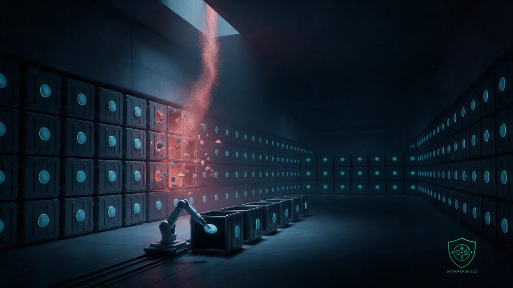

Twelve months of credit monitoring. For sealed court records. That is the entire remedy on offer.

Thomson Reuters disclosed on September 3, 2026 that an unauthorised party obtained files from C-Track — the court case management platform run by its West Publishing unit — hitting appellate courts in at least 12 U.S. states, the U.S. Virgin Islands, and three levels of court in Ontario, Canada.
WHAT ACTUALLY HAPPENED
Access ran from March 2026 to June 2026. Thomson Reuters detected it on June 30. The courts and Ontario's Attorney General were notified between July 23 and 27. Public disclosure came September 3.
Four months of access. Two more before anyone outside the courts knew.
The exposed data: names combined with Social Security numbers, driver's licence numbers, dates of birth, medical information and health insurance details. And this line, which is the one that matters — confidential, redacted or sealed court information may also have been affected at some courts.
Thomson Reuters confirmed the incident occurred inside its own cloud environment. It has not named an attacker or explained how access was obtained, and still does not know how many people are affected. Neither do the Canadian chief justices.
WHY THIS BREACH DOES NOT FIT THE PLAYBOOK
Every element of the standard response fails here.
Nobody in these files chose the vendor. They appeared in a court proceeding — defendant, plaintiff, witness, minor, sometimes a protected party. Their exposure is the product of a procurement decision, with no consent step anywhere in the chain.
And sealed material is not a credential. It cannot be rotated, reissued or monitored. A sealed juvenile record, a redacted victim identity, a protective order — once that is out, the harm is permanent and physical, not financial. Credit monitoring answers none of it.
That is third-party risk in 2026: your most sensitive data concentrated in one sector-wide platform, breached in someone else's cloud, on a timeline you do not control.
WHAT TO DO NOW
MAP WHERE YOUR MOST SENSITIVE DATA PHYSICALLY LIVES — if it sits in a vendor's cloud tenant, their detection capability is your detection capability.
PUT NOTIFICATION CLOCKS IN CONTRACTS — specify hours from vendor discovery to your team, not "promptly", because 65 days is what "promptly" produces.
CLASSIFY DATA THAT CANNOT BE REISSUED — sealed records, biometrics and health histories need controls that assume no post-breach remedy exists.
DEMAND LOG ACCESS BEFORE THE INCIDENT — you cannot scope a four-month intrusion using a vendor summary written by their lawyers.
You can outsource the platform. You cannot outsource the duty of care to the people in it.
Which of your suppliers holds data that no remediation could ever repair?